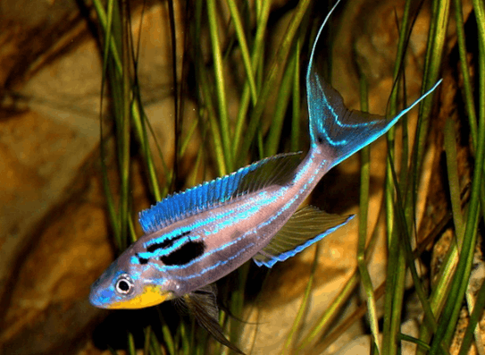

Systématique
- Ordre : Cichliformes
- Famille : Cichlidae
- Genre : Benthochromis
- Espèce : B. tricoti
- Auteur : Poll, 1948

Benthochromis tricoti est l'un des cichlidés les plus spectaculaires et les plus gracieux du lac Tanganyika. C'est une espèce benthopélagique qui vit à des profondeurs importantes, rarement observée à moins de 50 mètres de fond. Il possède un corps très allongé, comprimé latéralement, et des nageoires extrêmement effilées, en particulier la caudale qui se termine par de longs filaments.
Il peut atteindre une taille impressionnante de 25 à 28 cm pour les mâles. Sa coloration est subtile mais magnifique : un fond argenté à bleuté avec trois bandes horizontales jaunâtres ou orangées parcourant les flancs. Les mâles arborent des reflets métalliques intenses lors des parades nuptiales. Sa tête est fine avec une bouche protractile adaptée à la capture de petites proies en pleine eau.
C'est un poisson grégaire qui vit en grands bancs dans les zones d'eau libre au-dessus des fonds rocheux ou sablonneux profonds. Benthochromis tricoti est un nageur infatigable mais plutôt paisible, bien que les mâles deviennent territoriaux lors de la reproduction. Son tempérament est craintif, ce qui nécessite un environnement calme et de grands volumes de nage.
En aquarium, sa maintenance est considérée comme difficile en raison de sa taille, de son besoin d'espace et de sa sensibilité aux variations de paramètres. Il nécessite un éclairage tamisé pour reproduire la pénombre des profondeurs. Il est impératif de le maintenir en groupe (minimum 5-6 individus) pour qu'il se sente en sécurité.
Mode : Incubateur buccal maternel.
La reproduction est fascinante : le mâle attire la femelle vers un site de ponte (souvent une large pierre plate ou une dépression dans le sable). Après la fécondation, la femelle prend les œufs en bouche. L'incubation dure environ 3 à 4 semaines. En raison de la taille de l'espèce, les pontes sont relativement peu nombreuses (30 à 60 œufs) mais les œufs sont de grande taille.
Une fois lâchés, les alevins sont déjà assez grands et capables de se nourrir de zooplancton. Les parents ne s'occupent plus des jeunes après le premier lâcher. La réussite de la reproduction en captivité est rare et demande une excellente maîtrise de la qualité de l'eau et du régime alimentaire des reproducteurs.
Dimorphisme sexuel : Le mâle est nettement plus grand et arbore des nageoires beaucoup plus longues et effilées que la femelle. Les couleurs métalliques et les bandes horizontales sont également beaucoup plus vives chez le mâle, surtout en période de frai. La femelle reste plus terne et plus petite.
Espérance de vie : 8 à 12 ans en aquarium.
Endémique du lac Tanganyika, Benthochromis tricoti habite les zones bathypélagiques, généralement entre 50 et 150 mètres de profondeur, bien qu'il puisse descendre plus bas. Il reste lié aux pentes rocheuses abruptes du lac.
L'eau y est d'une pureté exceptionnelle, très alcaline et d'une grande stabilité thermique. À ces profondeurs, la lumière est très faible et la pression est constante, des conditions qu'il est complexe de simuler parfaitement en aquarium domestique.
Répartition

Origine naturelle :
- Afrique de l'Est : Lac Tanganyika (endémique).
- Localité type : Près de Mpala, République Démocratique du Congo.
Statut : Espèce peu courante en magasin spécialisé, souvent importée directement du lac. Elle est sensible au mal de décompression lors de la capture.
Paramètres de maintenance
Température : 24 à 26 °C (Éviter les hausses brutales).
pH : 8,0 à 9,2.
GH : 10 à 20 °dGH.
Aménagement : Bac très haut et long (min 200cm), décor rocheux minimaliste, éclairage faible.
Volume conseillé : Minimum 800-1000 L pour un petit groupe.
Régime alimentaire
Régime : Planctivore spécialisé.
Dans la nature, il se nourrit presque exclusivement de petits crustacés pélagiques, de larves de crevettes et de zooplancton.
En aquarium, il nécessite une nourriture fine et de haute qualité. Il accepte les artémias, mysis et cyclops surgelés. L'accoutumance aux granulés est possible mais ils doivent être de petite taille et rester longtemps en suspension. Il est important de nourrir plusieurs fois par jour en petites quantités.